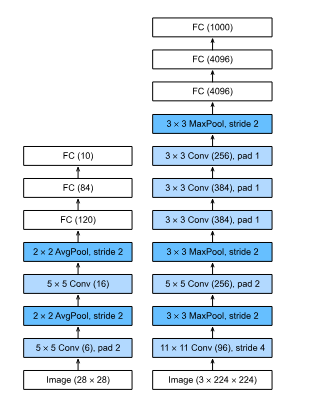
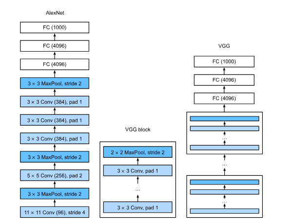
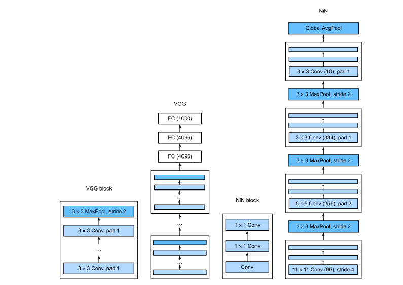
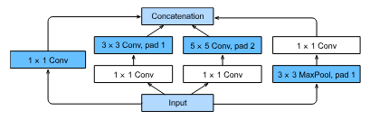
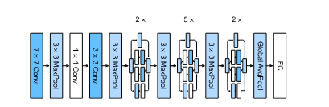

Chapter 8 - Modern CNN
Table of Contents
1. AlexNet
AlexNet is an 8-layer convolutional neural network (CNN).

- Left - LeNet, Right - AlexNet
- Used MaxPool instead of AvgPool.
- Used dropout techniques.
- Used ReLU instead of Sigmoid.
2. VGG
- AlexNet: Individual convolutional layers with varying kernel sizes.
- VGG: Introduced the concept of “VGG blocks” - a sequence of:
- Multiple convolutional layers with same small (3x3) kernel and padding = 1 (to maintain resolution).
- ReLU activation function.
- Max-pooling layer (2x2 with stride 2) for downsampling (reducing resolution).
- VGG: Introduced the concept of “VGG blocks” - a sequence of:

- Architecture:
- Deeper than AlexNet (e.g., VGG-11 has 11 layers: 8 convolutional, 3 fully connected).
- Uses only 3x3 convolutional kernels throughout the network.
- Convolutional layers are grouped into VGG blocks.
- Each VGG block followed by max-pooling (2x2, stride 2) that halves the spatial dimensions.
- Number of channels doubles after each block (e.g., 64, 128, 256, 512).
- The structure is modular. Can create deeper or shallower VGG networks by varying number of blocks and number of convolutions inside each block.
- Deeper than AlexNet (e.g., VGG-11 has 11 layers: 8 convolutional, 3 fully connected).
3. Network in Network
- Parameter Explosion
- Fully connected layers in networks like AlexNet and VGG have a huge number of parameters.
- Example: VGG-11’s fully connected layers require ~400MB of memory.
- Issues:
- Memory intensive: Hard to deploy on devices with limited memory (e.g., mobile phones).
- Computationally expensive: Slows down training and inference.
- Loss of Spatial Information
- Using fully connected layers early in the network discards spatial relationships learned by convolutional layers.
- Analogy: Shuffling the pieces of a jigsaw puzzle destroys the image.
- NiN’s Solution: 1x1 Convolutions and Global Average Pooling
- 1x1 Convolutions
- Applied after each regular convolution.
- Act as a fully connected layer at each pixel location.
- Introduce non-linearity across channels without affecting spatial structure.
- Analogy: A mini neural network at each pixel, learning relationships between feature maps.
- Benefits:
- Adds non-linearity.
- Increases representational power.
- Can reduce the number of channels (and parameters).
- Global Average Pooling
- Replaces the final fully connected layers.
- Computes the average of each feature map across all spatial locations.
- Produces a single value per feature map.
- Analogy: Summarizing a document by averaging the sentiment of each paragraph.
- Benefits:
- Drastically reduces parameter count (no large weight matrices).
- Adds robustness to spatial translations.
- 1x1 Convolutions

- NiN Blocks
- Definition
- A convolutional layer (kernel size > 1x1, e.g., 3x3, 5x5, 11x11).
- Two 1x1 convolutional layers (per-pixel “fully connected” layers).
- ReLU activations after each convolutional layer.
- Definition
4. Multi-Branch Networks (GoogLeNet)
- GoogLeNet is a multi-branch CNN architecture.
- It popularized the pattern of stem, body, and head in CNN design.
- Stem: The initial layers that process the raw input (e.g., the first few convolutional layers). Think of it as the part of the network that “ingests” the image and does initial processing.
- Body: The main part of the network, consisting of repeated blocks (in this case, Inception blocks) that extract increasingly complex features.
- Head: The final layers that take the features extracted by the body and make a prediction (e.g., classification, object detection).
- Instead of trying to figure out the best size for convolution kernels (e.g., 3x3, 5x5), GoogLeNet used multiple kernel sizes in parallel and combined their outputs. This allowed it to capture features at different scales effectively.
4.1. Inception Block

- Four Parallel Branches: The Inception block has four paths that process the input simultaneously.
4.2. GoogLeNet Architecture

- Overall Structure: GoogLeNet is built by stacking multiple Inception blocks, with max-pooling layers in between to reduce the spatial dimensions.
- Stem: Similar to earlier networks like AlexNet, it starts with a few convolutional layers to process the raw image.
- Body: The core of the network, made up of nine Inception blocks organized into three groups. The number of channels and the ratios between branches in the Inception blocks are carefully chosen.
- Head: A global average pooling layer reduces the spatial dimensions to 1x1, followed by a fully connected layer for classification.
- Dimensionality Reduction: The max-pooling layers gradually reduce the height and width of the feature maps, while the number of channels increases. This is a common pattern in CNNs: trading spatial resolution for richer feature representations.
5. Batch Normalization
5.1. The Problem: Training Deep Networks is hard
- Vanishing/Exploding Gradients: In very deep networks, gradients can become extremely small or large as they are backpropagated through many layers. This makes it hard for the optimization algorithm to update the weights effectively.
- Internal Covariate Shift: The distribution of the activations (outputs of layers) can change significantly during training as the weights of earlier layers are updated. This means that each layer is constantly having to adapt to a new input distribution, slowing down learning.
- Sensitivity to Initialization: Deep networks can be very sensitive to how the weights are initialized. Poor initialization can lead to slow convergence or getting stuck in bad local minima.
- Overfitting: Deeper networks have more parameters, making them more prone to overfitting the training data and performing poorly on unseen data.
5.2. The Solution
5.2.1. Part 1: Standardization (Preprocessing)
- Transforms data to have zero mean and unit variance.
- How it’s done (for each feature):
- Calculate the mean (average) of the feature across all data points.
- Calculate the standard deviation (a measure of how spread out the data is) of the feature.
- For each data point, subtract the mean and divide by the standard deviation.
- Benefits:
- Improved Numerical Stability: Keeps values in a reasonable range, preventing numerical issues during computation.
- Faster Convergence: Optimizers work better when features are on a similar scale.
- Implicit Regularization: Standardization can act as a form of regularization, reducing overfitting in some cases.
5.2.2. Part 2: Batch Normalization (Training)
- Batch Normalization extends the idea of standardization to the internal layers of a deep network. Instead of just standardizing the input data, it standardizes the activations of each layer during training.
- How it works (for each layer, during each training iteration):
- Calculate Batch Statistics:
- Calculate the mean (μB) and variance (σB) of the activations within the current minibatch (a small subset of the training data).
- Normalize:
- Subtract the batch mean and divide by the batch standard deviation (plus a small constant ε for numerical stability). This centers the activations around 0 and scales them to have unit variance.
- xnormalized = (x - μB) / (σB nil+ ε)
- Subtract the batch mean and divide by the batch standard deviation (plus a small constant ε for numerical stability). This centers the activations around 0 and scales them to have unit variance.
- Scale and Shift:
- Multiply the normalized activations by a learnable scale parameter (γ) and add a learnable shift parameter (β). This allows the network to learn the optimal mean and variance for each layer, rather than always forcing them to be 0 and 1. This step restores the representation power of the network.
- y = γ * xnormalized + β
- Multiply the normalized activations by a learnable scale parameter (γ) and add a learnable shift parameter (β). This allows the network to learn the optimal mean and variance for each layer, rather than always forcing them to be 0 and 1. This step restores the representation power of the network.
- Calculate Batch Statistics:
- Why it’s called “Batch” Normalization: The statistics (mean and variance) are calculated over a batch of data, not the entire dataset.
- Equation: BN(x) = γ * (x - μB) / (σB + ε) + β
- Why it works
- Reduces Internal Covariate Shift: By normalizing the activations, batch normalization stabilizes the distribution of inputs to each layer, making training faster and more stable.
- Allows Higher Learning Rates: Batch normalization makes the optimization landscape smoother, allowing you to use larger learning rates without causing instability.
- Acts as Regularization: The noise introduced by using batch statistics acts as a form of regularization, reducing overfitting. This is because each example within a batch is normalized based on the other examples in the batch, adding a small amount of variation.
- Makes Networks Less Sensitive to Initialization: Batch normalization reduces the dependence on careful weight initialization.
5.3. Batch Normalization During Inference
- Difference from Training: During inference, we don’t have a batch of data to calculate statistics from. Instead, we use moving averages of the mean and variance that were computed during training.
- Moving Averages: During training, we keep track of a running average of the batch means and variances. These moving averages are then used to normalize activations during inference. This makes the inference deterministic (the same input always gives the same output).
5.4. Batch Normalization Layers
5.4.1. Batch Normalization
- Batch normalization is a technique used to improve the training of deep neural networks. It normalizes the inputs of a layer by adjusting and scaling the activations to have a mean of 0 and a variance of 1. This helps in stabilizing and speeding up the training process.
- Why is it needed?
- During training, the distribution of inputs to each layer can change as the weights of the previous layers are updated. This phenomenon is called internal covariate shift, and it can slow down training because the network has to constantly adapt to the new distributions. Batch normalization reduces this shift by normalizing the inputs.
- Batch Normalization in Fully Connected Layer vs Convolutional Layer
- In fully connected layers, batch normalization is typically applied after the affine transformation (i.e., the linear transformation Wx+bWx+b) but before the nonlinear activation function (e.g., ReLU, sigmoid).
- h=ϕ(BN(Wx+b))
- In convolutional layers, batch normalization is applied after the convolution operation but before the activation function. The key difference from fully connected layers is that normalization is applied per channel across all spatial locations (height and width of the feature map).
- How it works:
- Imagine you have a convolutional layer with 64 output channels, and the output feature maps have a size of 28×28. For each of the 64 channels, batch normalization computes the mean and variance across all 28×28 spatial locations and all examples in the minibatch. It then normalizes the activations for each channel independently.
5.4.2. Layer Normalization
- Layer normalization is an alternative to batch normalization. Instead of normalizing across the batch dimension, it normalizes across the features of a single example.
- LN(x)= (x-μ)/sigma
- Key Differences from Batch Normalization:
- Batch Normalization: Normalizes across the batch dimension (i.e., over multiple examples).
- Layer Normalization: Normalizes across the feature dimension (i.e., within a single example).
- See ./batch_vs_layer_example.html for example
5.5. Discussion on Batch Normalization
5.5.1. Intuition Behind Batch Normalization
- Makes the optimization landscape smoother.
- Stabilizes activations during training
5.5.2. Critiques of “Internal Covariate Shift”
- Misnomer: Not the same as covariate shift.
- Lacks rigorous theoretical foundation.
5.5.3. Alternative Explanations
- Smoother optimization landscape.
- Regularization through noise.
- Rescaling of activations.
5.5.4. Practical Aspects
- Stabilizes intermediate outputs.
- Applied differently in fully connected vs. convolutional layers.
- Different behaviors in training vs. prediction mode.
- Improves convergence and acts as a regularizer.
- Robustness considerations (e.g., removing batch normalization).
5.5.5. Broader Implications
- Highlights the gap between intuitions and rigorous explanations.
- Batch normalization is widely used despite incomplete understanding.
5.5.6. Key Takeaways
- Batch normalization is empirically effective but theoretically unclear.
- Practitioners should separate guiding intuitions from established facts.